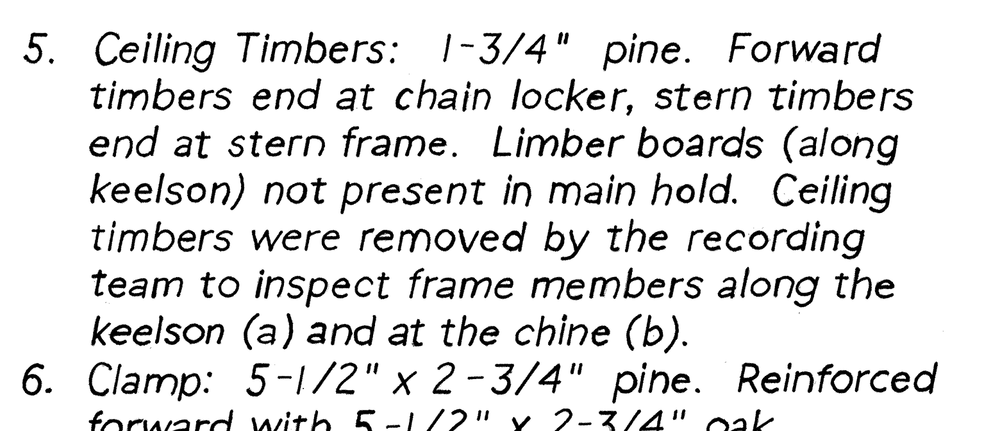

Original scan pixels: [8384, 3512, 10944, 4615]; source SHA-256: bb1d4a25c174f080601e9248d7445ea734ca6092790c4a931ddecf51de027cf3.
Native lossless view · Raw OCR · Word coordinates/confidence · Manifest

Ceiling timbers: 1-3/4-inch pine. Forward timbers end at the chain locker; stern timbers end at the stern frame. Limber boards along the keelson are not present in the main hold. Ceiling members were removed by the recording team to inspect frames.
Clamp: 5-1/2 x 2-3/4-inch pine; reinforced forward with 5-1/2 x 2-3/4-inch oak.
5. Ceiling Timbers: 1-3/4" pine. Forward timbers end at chain locker, stern timbers end at stern frame. Limber boards (along keelson) not present in main hold. Ceiling timbers were removed by the recording team to inspect frame members along the keelson (a) and at the chine (b). | 6. Clamp: 5-172" x 2-3/4" pine. Reinforced trnraard with ELT /D" y D-ZS/A" AjaL